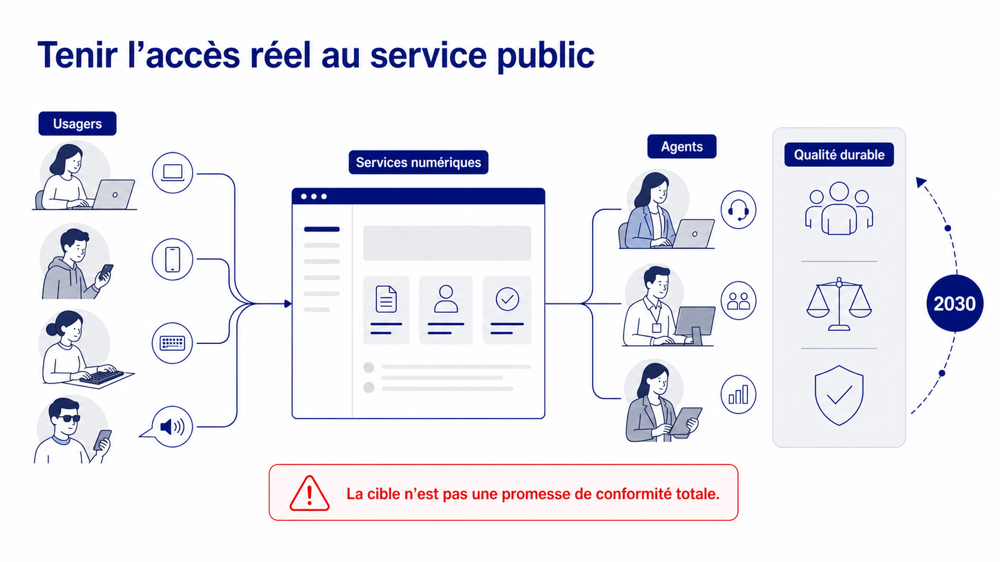
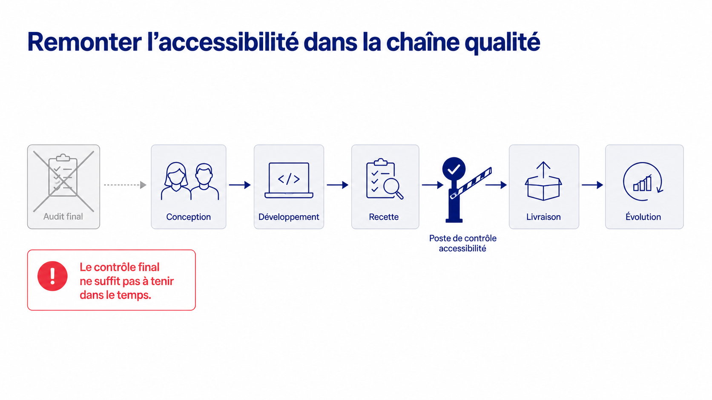
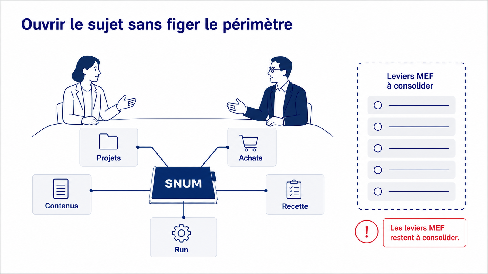
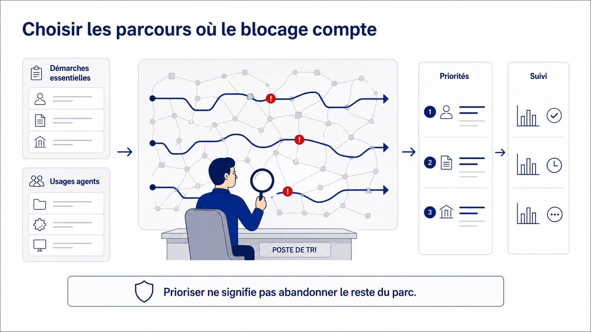
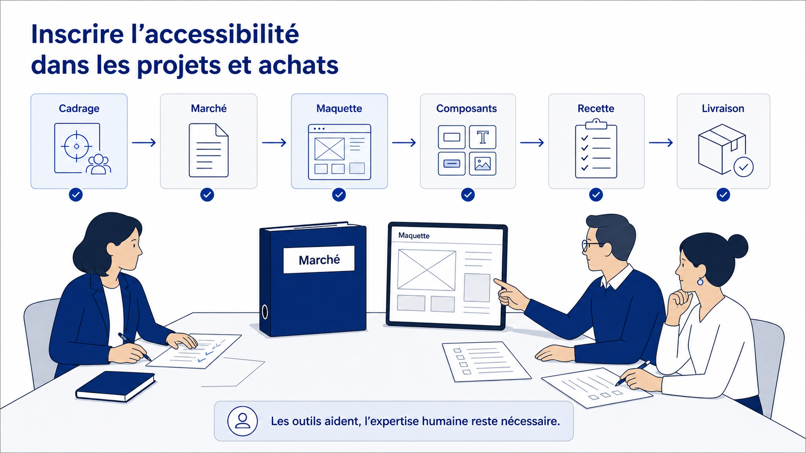
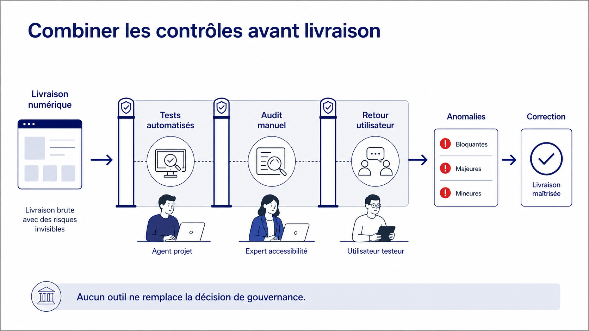
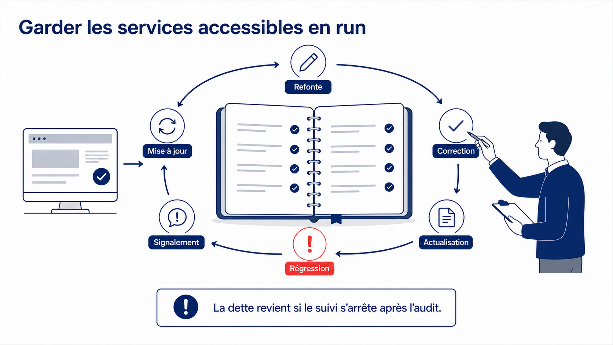
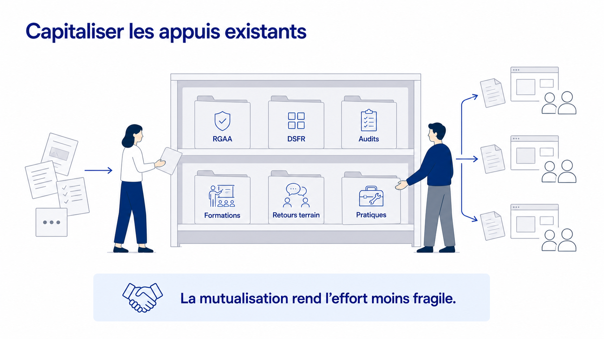
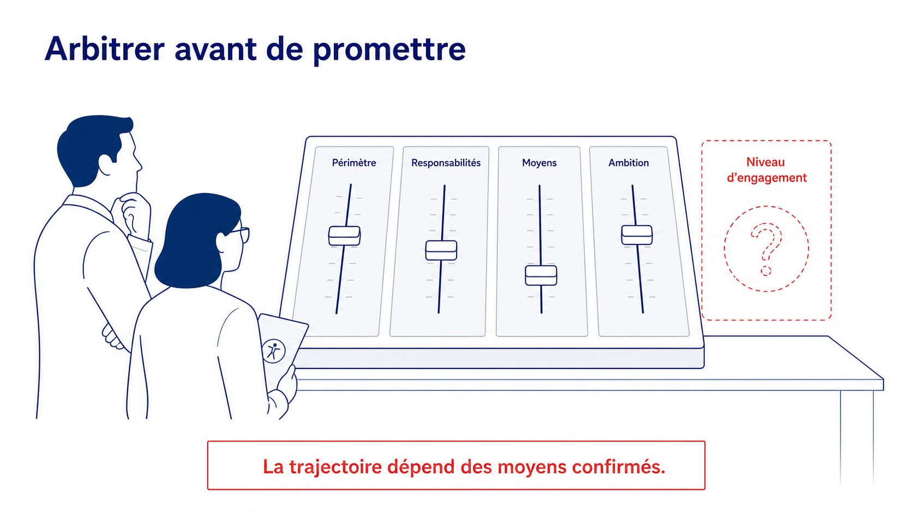
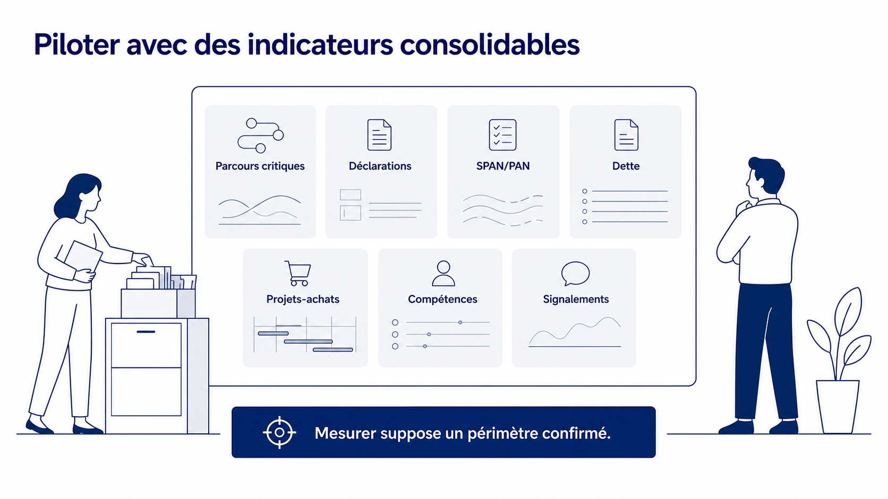

Objectifs 2030 - accessibilité numérique
Présentation MiWeb V2
Slide 1 sur 10 - Tenir l’accès réel au service public
Slide 1 - Tenir l’accès réel au service public

La slide montre un service numérique commun au centre. À gauche, plusieurs usagers y accèdent par ordinateur, mobile, clavier et aide vocale. À droite, des agents utilisent le même service, puis une trajectoire mène vers 2030 et la qualité durable.
Textes visibles
- Tenir l’accès réel au service public
- Usagers
- Services numériques
- Agents
- Qualité durable
- 2030
- La cible n’est pas une promesse de conformité totale.
Message à retenir
L’objectif 2030 porte sur l’accès réel au service public, sans promettre une conformité totale de tout le parc.
Slide 2 - Remonter l’accessibilité dans la chaîne qualité

La slide représente une chaîne de production numérique. Un audit final isolé est mis en retrait, puis les étapes conception, développement, recette, poste de contrôle, livraison et évolution s’enchaînent pour montrer l’intégration de l’accessibilité plus tôt dans le cycle.
Textes visibles
- Remonter l’accessibilité dans la chaîne qualité
- Audit final
- Conception
- Développement
- Recette
- Poste de contrôle accessibilité
- Livraison
- Évolution
- Le contrôle final ne suffit pas à tenir dans le temps.
Message à retenir
L’accessibilité doit être intégrée dans la chaîne qualité, et pas seulement contrôlée en fin de projet.
Slide 3 - Ouvrir le sujet sans figer le périmètre

La slide montre deux personnes autour d’une table de coordination. Un dossier central SNUM est relié aux projets, aux achats, aux contenus, à la recette et au run. À droite, un périmètre pointillé rappelle que les leviers MEF restent à consolider.
Textes visibles
- Ouvrir le sujet sans figer le périmètre
- SNUM
- Projets
- Achats
- Contenus
- Recette
- Run
- Leviers MEF à consolider
- Les leviers MEF restent à consolider.
Message à retenir
La contribution SNUM peut ouvrir le sujet, mais les leviers MEF doivent encore être consolidés avant engagement.
Slide 4 - Choisir les parcours où le blocage compte

La slide présente une carte de parcours numériques. Des démarches essentielles et des usages agents alimentent un poste de tri, qui fait ressortir les parcours où les blocages doivent être priorisés et suivis.
Textes visibles
- Choisir les parcours où le blocage compte
- Démarches essentielles
- Usages agents
- Poste de tri
- Priorités
- Suivi
- Prioriser ne signifie pas abandonner le reste du parc.
Message à retenir
La priorisation par l’usage rend l’action pilotable sans abandonner l’exigence sur le reste du parc.
Slide 5 - Inscrire l’accessibilité dans les projets et achats

La slide montre une équipe travaillant sur un dossier de marché et une maquette. Une chaîne d’étapes relie cadrage, marché, maquette, composants, recette et livraison pour montrer l’intégration de l’accessibilité dans les processus ordinaires.
Textes visibles
- Inscrire l’accessibilité dans les projets et achats
- Cadrage
- Marché
- Maquette
- Composants
- Recette
- Livraison
- Les outils aident, l’expertise humaine reste nécessaire.
Message à retenir
L’accessibilité doit être inscrite dans les projets et achats, avec des outils d’appui qui ne remplacent pas l’expertise humaine.
Slide 6 - Combiner les contrôles avant livraison

La slide représente une livraison numérique qui passe par trois contrôles complémentaires : tests automatisés, audit manuel et retour utilisateur. Les anomalies sont ensuite classées avant correction et livraison maîtrisée.
Textes visibles
- Combiner les contrôles avant livraison
- Livraison numérique
- Tests automatisés
- Audit manuel
- Retour utilisateur
- Anomalies
- Correction
- Livraison maîtrisée
- Aucun outil ne remplace la décision de gouvernance.
Message à retenir
Les contrôles techniques, l’expertise humaine et les retours utilisateurs doivent se compléter avant livraison.
Slide 7 - Garder les services accessibles en run

La slide montre un service publié, un carnet de suivi et une boucle de maintien. Refonte, mise à jour et signalement peuvent faire apparaître une régression ; la correction et l’actualisation referment la boucle.
Textes visibles
- Garder les services accessibles en run
- Refonte
- Mise à jour
- Signalement
- Régression
- Correction
- Actualisation
- La dette revient si le suivi s’arrête après l’audit.
Message à retenir
Le run doit maintenir l’accessibilité dans le temps, car la dette peut revenir après les évolutions.
Slide 8 - Capitaliser les appuis existants

La slide montre une réserve commune organisée en six dossiers : RGAA, DSFR, audits, formations, retours terrain et pratiques. Des documents dispersés y entrent, puis les projets réutilisent ces appuis.
Textes visibles
- Capitaliser les appuis existants
- RGAA
- DSFR
- Audits
- Formations
- Retours terrain
- Pratiques
- La mutualisation rend l’effort moins fragile.
Message à retenir
Les appuis existants doivent être mutualisés pour rendre l’effort plus durable et moins fragile.
Slide 9 - Arbitrer avant de promettre

La slide montre une console d’arbitrage observée par deux personnes. Les leviers périmètre, responsabilités, moyens et ambition restent réglables, et le niveau d’engagement demeure en pointillé.
Textes visibles
- Arbitrer avant de promettre
- Périmètre
- Responsabilités
- Moyens
- Ambition
- Niveau d’engagement
- La trajectoire dépend des moyens confirmés.
Message à retenir
La trajectoire ne doit pas devenir une promesse avant clarification du périmètre, des responsabilités et des moyens.
Slide 10 - Piloter avec des indicateurs consolidables

La slide montre un tableau de bord sans chiffres figés. Les familles d’indicateurs portent sur les parcours critiques, les déclarations, les SPAN et PAN, la dette, les projets-achats, les compétences et les signalements.
Textes visibles
- Piloter avec des indicateurs consolidables
- Parcours critiques
- Déclarations
- SPAN/PAN
- Dette
- Projets-achats
- Compétences
- Signalements
- Mesurer suppose un périmètre confirmé.
Message à retenir
Le pilotage doit commencer par des familles d’indicateurs consolidables, sans figer de cible chiffrée avant confirmation du périmètre.